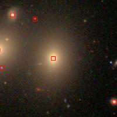

Click in the header to sort the SNe based on this criterion
A small and red square means that there is available spectrum in SDSS
| SN ID | z | R (kpc) | R (arcsec) | HOST ID | HOST RA (deg) | HOST DEC (deg) | HOST TYPE | HOST SDSS IMG |
| 1998de | 0.016 | 23.970104 | 72.062473 | NGC 0252 | 12.0083 | 27.6236 | S0 | |
| 1999da | 0.013 | 19.145551 | 71.007042 | NGC 6411 | 263.8875 | 60.8133 | E | |
| 2000cx | 0.008 | 18.411667 | 111.40018 | NGC 524 | 21.2000 | 9.5389 | S0 | |
| 2001ie | 0.031 | 26.387867 | 40.474189 | UGC 5542 | 154.2208 | 60.2850 | E | |
| 2002cu | 0.023 | 45.499604 | 94.641429 | NGC 6575 | 272.7375 | 31.1161 | E | |
| 2002el | 0.029 | 15.984844 | 26.248809 | NGC 6986 | 314.1292 | -18.5667 | S0 | |
| 2002es | 0.02843 | 20.974941 | 35.148969 | UGC 2708 | 50.9583 | 40.5578 | S0 | |
| 2002he | 0.025 | 22.012620 | 42.059482 | UGC 4322 | 125.0083 | 62.8306 | E | |
| 2004go | 0.02915 | 68.125769 | 111.28131 | IC 270 | 43.9333 | -14.2078 | S0 | |
| 2005cf | 0.006 | 15.335342 | 123.91126 | MCG -1-39-3 | 230.3875 | -7.4478 | S0 | |
| 2005er | 0.026156 | 53.807045 | 98.175404 | NGC 7385 | 342.4792 | 11.6086 | E | |
| 2005ki | 0.019593 | 29.298837 | 71.727889 | NGC 3332 | 160.1167 | 9.1825 | S0 | |
| 2006bn | 0.018726 | 18.872540 | 48.373546 | IC 4926 | 300.0500 | -38.5786 | E | |
| 2006em | 0.019 | 21.836715 | 55.154329 | NGC 911 | 36.4250 | 41.9564 | E | |
| 2007ao | 0.024686 | 24.315817 | 47.061237 | NGC 5532 | 214.2208 | 10.8075 | S0 | |
| 2007au | 0.021 | 22.527498 | 51.400389 | UGC 3725 | 107.9250 | 49.8667 | S0 | |
| 2008Q | 0.008 | 24.315657 | 147.12240 | NGC 524 | 21.0083 | 9.4347 | S0 | |
| 2008af | 0.034 | 23.690589 | 33.055257 | UGC 9640 | 224.8667 | 16.6450 | E | |
| 2008bf | 0.024 | 25.182564 | 50.159745 | NGC 4055 | 181.0042 | 20.2322 | E |  |
| 2008dx | 0.023 | 21.682123 | 45.099889 | NGC 4898 | 195.0750 | 27.9572 | E | |
| 2008gl | 0.033993 | 17.193973 | 23.995416 | UGC 881 | 20.2208 | 4.8014 | E | |
| 2009al | 0.02209 | 30.193424 | 65.436993 | NGC 3425 | 162.8542 | 8.5672 | S0 |